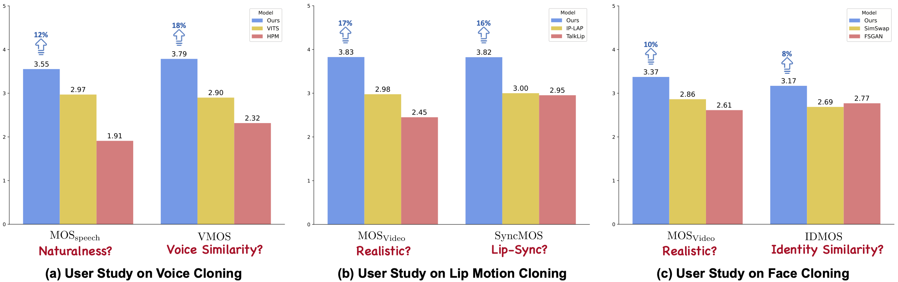

TL;DR: Diff-Dolly is the first unified framework to address multimedia inconsistencies issue of media cloning, which incorporates multimodal diffusion process to probabilistically generate speech-video with consistency and diversity.
Results
Qualitative Results
1. Voice Cloning Results
Instruction: Please compare the test speech with the Reference TTS Speech for their speech naturaness (semantic naturaness); and compare the test speech and the Reference Voice for their voice similarity.
Demo 1: but it's not enough (English)
Demo 2: she wanted to change policy at the government level (English)
Demo 3: und leichte flugzeuge fliegen weiter(German)
Demo 4: ese pedido es un mandato(Spanish)
Demo 5: elas faziam testes de aptidão musical (Portuguese)
See Mel-Spectrogram Comparison
As shown in Figure, in the first row, VITS exhibits duration asynchronization with the ground truth, resulting in significant differences. In the third row, we observe severe over-smoothing in FastSpeech 2, HPM, and V2C, causing a degradation in the reconstruction of details. In contrast, our results are closer to the ground truth, benefiting from enhanced detail reconstruction and duration synchronization capabilities of Diff-Dolly.
2. Lip Motion Cloning Results
Instruction: Please compare the test video with the Reference video for their naturalness and lip sync (Please unmute manually 🔇).
Demo 1: Show abuse the light of day by talking about it with your children your coworkers your friends and (English)
Demo 2: I see now i never was one and not the other (English)
Demo 3: Donc, si j'essaye de faire un poème. (French)
Demo 4: denn ich weiß, ihr wollt das zeugdoch jetzt schon. gebt es zu. (German)
Demo 5: ou por não ser utilizada , porque não passou para a próxima geração (Portuguese)
See Image Comparison
As shown in Figure on speaker B, other methods produce blurry mouth while we shows more clear results. On speaker C, our results show fewer artifacts and blend more naturally with the surrounding skin. In contrast, IP-LAP displays blurry artifacts, and TalkLip generates boundary artifacts. Furthermore, in terms of lip-sync, Diff-Dolly shows improvements of 0.05 in LSE-D and 0.59 (28% relative improvement) in LMD compared to the second-best method, which indicates that our method achieves better synchronization. On speaker A, Diff-Dolly produces videos with realistic lip shapes and natural motions. In contrast, TalkLip shows significant differences in the pronunciation of $/w/$.
3. Face Cloning Results
See Image Comparison
Specifically, we observe that the baselines tend to align the attributes of the reference video, resulting in reduced diversity of the generated content due to one-to-one mapping. Our Diff-Dolly incorporates only the landmark and background information from the reference video during inference, reducing dependency on the reference video and enhancing consistency with the source speaker's style. We also observe that DiffSwap, despite using the diffusion model, shows poor temporal consistency in videos focusing on image generation. In contrast, Diff-Dolly achieves strong temporal consistency in videos and remains compatible with image generation.
4. Consistent Multimedia Cloning Results
Instruction: Please unmute manually 🔇.
Result
Result
See Image Comparison

We compare the output quality of our method to a number of previous approaches: (a) shows temporally adjacent frames, while (b) shows frames temporally further apart. While our method preserves the spatial structure of the input well, producing the desired output styles, previous methods tend to change even the semantic content of the frames.
Quantitative Results
we compare Diff-Dolly with previous state-of-the-art (SOTA) methods on the CMC-TED. These methods are from different media cloning tasks.
User Study
The scoring results of the user study are presented in the Figure. Diff-Dolly demonstrates a clear advantage over SOTA methods in all aspects, particularly in achieving higher voice similarity, lip-sync accuracy and video quality, which validates the effectiveness of our method in multi- media cloning. Furthermore, for scores rated as 4 to 5 of SyncMOS, our method achieved 100% of the user votes, whereas IP-LAP and TalkLip only garnered 60% and 53% of the votes, respectively. For scores rated as 4 to 5 of VMOS, our method achieved 93% of the user votes, whereas VITS and HPM only garnered 40% and 20% of the votes, respectively. Although the difference in IDMOS between Diff-Dolly and the top-performing methods is relatively small, we still achieve at least 10% improvement of the video quality on the face cloning.